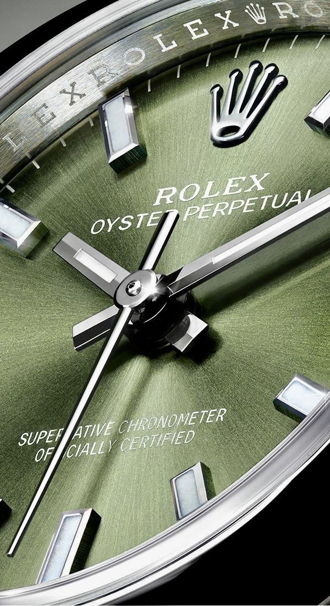
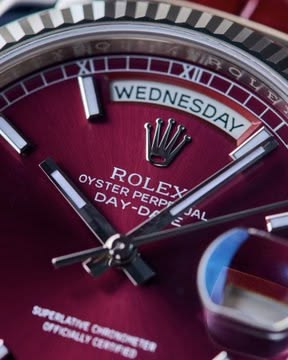
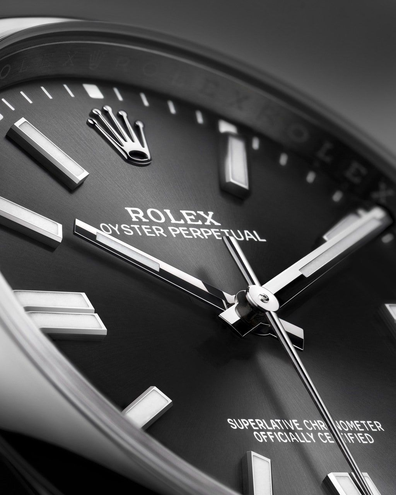

The Art of Making
The Rolex Process
Our Philosophy
Where Science Meets Art
Every Rolex watch is a testament to the art of fine watchmaking. From the selection of raw materials to the final quality control, each step of the manufacturing process reflects our uncompromising pursuit of excellence.

Movement
In-House Movements
Every Rolex movement is designed, developed, and manufactured entirely in-house. This complete integration of the production process ensures uncompromising quality at every stage of the watchmaking process.

Materials
Oystersteel Mastery
Rolex uses its own exclusive alloy — Oystersteel — from the 904L steel family. Particularly resistant to corrosion, it acquires a remarkable sheen when polished.

Precision
Superlative Chronometer
Every Rolex watch is a certified Superlative Chronometer — accurate to -2/+2 seconds per day. A standard that goes far beyond the requirements of the Swiss Official Chronometer Testing Institute.

Innovation
Perpetual Rotor
The invention of the self-winding mechanism with a Perpetual rotor in 1931 transformed watchmaking. It winds the mainspring continuously through the natural motion of the wearer's wrist.
Parts Per Watch
Hours Power Reserve
Years of Innovation
Metres Waterproof
Perfection is not an accident. It is the result of relentless dedication to every detail, no matter how small.